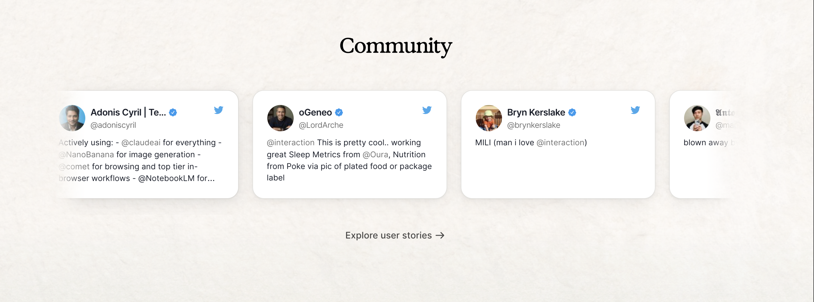
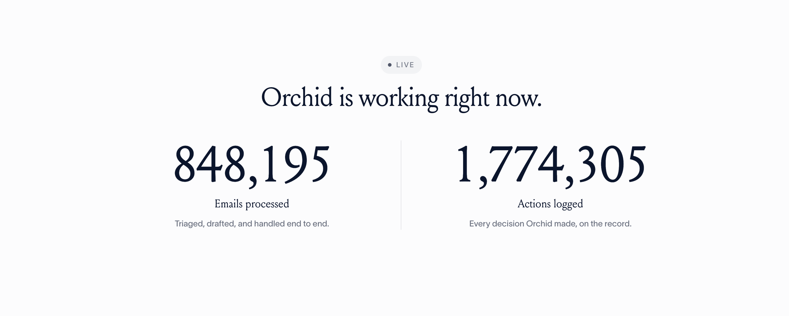
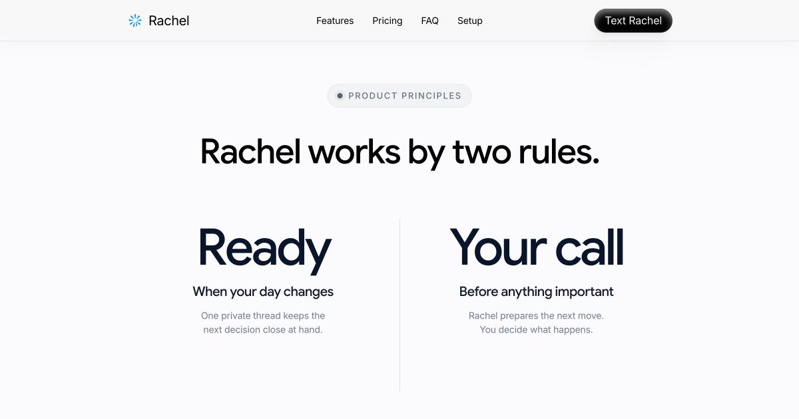
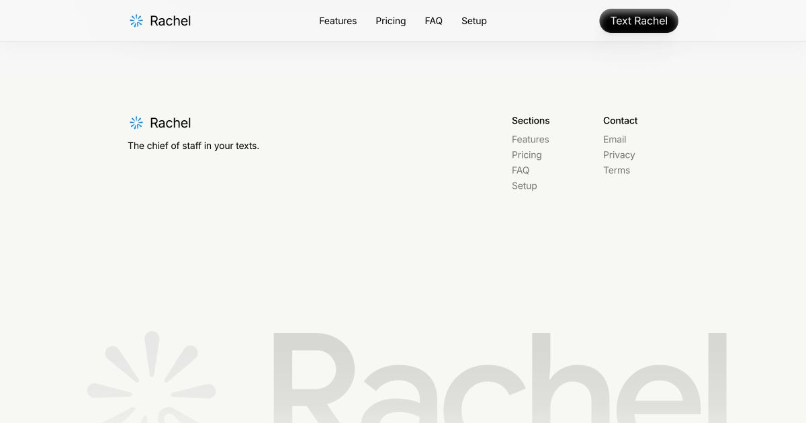

Hero hierarchy and phone reveal
Moving community / workflow rail

Product principles without fabricated evidence


Product-led closing CTA
Oversized fading signature

Reference composition and effect on the left; Rachel implementation on the right. Visual direction is translated into Rachel's Slate-derived type, spacing, product art, and identity rather than copied literally.



